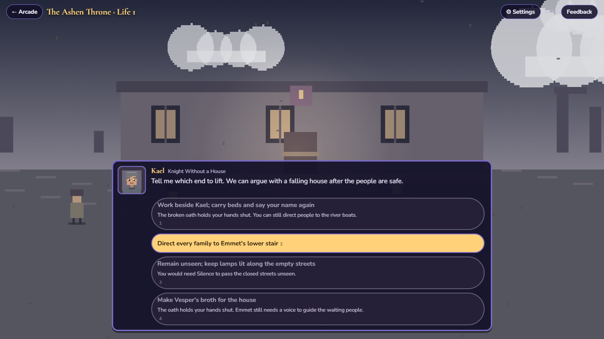

Begin in the Between
Follow the narrator into the Between. Choose a world, then read each gift’s description and stated cost. Asterhold brings you to Lanthorn before the beast tide; Hearthmere gives you the Reedlight Inn before winter; the Ashen Throne wakes you in a fallen house during a plague. All three are playable.
Give yourself a name and choose your appearance. The people you meet and the responses you choose shape each life. These are authored portrait scenes and choices, rather than free-moving exploration.

A gift changes the choices you see
Asterhold
| Gift | Its description | Its stated cost |
|---|---|---|
| Appraisal | See the truth of people and things. | People can feel themselves being read. |
| Pocket Space | Carry things in a weightless space. | People may want you to carry their load. |
| Sword Saint’s Instinct | A master’s fighting instinct from your first day. | Holding back once a fight begins is difficult. |
These are the story’s descriptions. The current game expresses gifts through its scenes and available responses; it is not yet a free-moving action RPG with an inventory or combat controls. Read a response in context rather than assuming the strongest-sounding gift guarantees a good ending.
Hearthmere
Cooking makes shared meals possible, but stopping to cook can cost the caravan departure. Speech lets you hear Puddle, but a neighbor may hear you talking to an empty well. Green brings life back, including growth across the inn step. You can clear that step and keep planning; winter does not run on a real-world timer.
The Ashen Throne
Return wakes you at dawn after death, remembering what happened while the world forgets your work and friendships. Blood Oath binds your shelter promise: break it and your hands cannot carry the beds, though you can still guide families to safety. Silence reveals a hidden record but costs recognition. Working beside Kael and saying your name can restore it; staying unseen is also a deliberate path.

Read, choose, and take your time
Click or tap to continue speaking. Space and Enter advance dialogue; while text is still appearing, a press reveals the line first. Select a response with its button. Number keys select numbered choices; Enter selects the first available response, so take care when you reach a decision.
There is no real-time countdown behind Lanthorn’s warnings about the approaching beast tide. All three lives progress when you continue scenes and make choices. After Hesta’s registration, the Status button opens your character’s in-world record.
- Read what Mira and the other people need, rather than treating each conversation as a reward menu.
- Available responses can depend on your gift, what happened earlier and remembered knowledge.
- The browser saves your life as you progress. Returning to the same browser can resume it; clearing browser data can remove it.
An ending is also something you learn
Asterhold has eight endings; Hearthmere has four. The Ashen Throne has five final outcomes and a death route. They are not all victories, and a difficult ending can still teach you something to carry forward. When a life ends, you return to the Between with its record; another life can begin with remembered knowledge. Return is the exception: death rewinds that same Ashen life, keeping learned knowledge while resetting its work and choices. After a returned dawn, you can choose to lay the gift down and leave.
How returning memories work (light spoilers)
Some endings leave memories that affect later scenes and responses. They are recorded knowledge, not a blanket stat upgrade or permission to skip every obstacle. You can choose a new gift and identity for the next life. Memories can travel between worlds: a recipe or something learned by listening may open a new response. Return’s local remembered record survives its dawns but does not become a new soul memory until the life actually ends. Systemic skill progression is still later work.
A guide should help you understand the choices, not replace them. Try a first life without an ending walkthrough, then decide what you want to do differently.